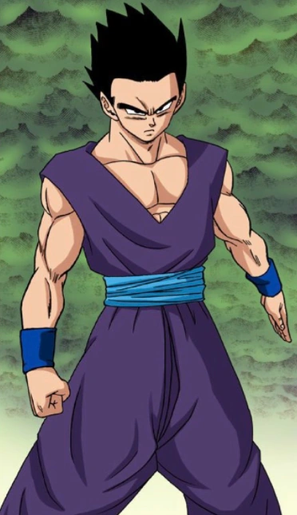

Son Gohan (孫そん悟ご飯はん Son Gohan) is a half-breed Saiyan and one of the most prominent characters in the Dragon Ball series.
He is the elder son of the series' primary protagonist Goku and his wife Chi-Chi, the older brother of Goten, the husband of Videl and father to Pan.
He is named after Goku's adoptive grandfather, Gohan.
Unlike his father, Gohan is a brilliant scholar and lacks a passion for fighting, preferring to do so only when his loved ones are threatened.
Nevertheless, he spends much of his life participating in the defense of Earth, often helping to turn the tides when the dormant depths of his power are unleashed.
As a child, Gohan was a shy, studious, intellectual child who lacked a Saiyan's raw fighting spirit, so he had to utilize his incredible half-breed Saiyan potential and emotional reserves to protect those he loves.
As an adult, he achieves his dream career of becoming a great scholar.
Being only half-Saiyan, Gohan is unusual in his values and personality compared to most full-blooded Saiyans in regards to the fact that he does not derive much pleasure from combat.
However, when he is forced to fight, he shows special interest in protecting his family and friends.
Like his father, Gohan has a pure and gentle heart, as well as possessing the typical Saiyan appetite that will compel to eat anything.
While he claims he does not share the love of fighting Goku has, Gohan does indeed love martial arts and adventures.
It is also clearly obvious that he enjoys his superhuman powers, especially when utilizing them as a superhero.
However, he dislikes receiving the fame and attention that comes with it and prefers to keep a low profile, which is why he created the Great Saiyaman persona, in order to keep his identity a secret.
This is even more evident when he didn't acknowledge Cell's defeat at his hands to the public after Mr. Satan falsely took credibility for it.
During the Zeno Expo, he admitted that his Saiyan half was getting excited from the challenge shown by Top of Universe 11, demonstrating that even though he despises senseless violence, he actually does enjoy fighting as a sport.
It is possible that he prefers not to fight due to the many gruesome and painful battles he experienced in the past as a child, which may have led Gohan to have negative emotions associated with fighting.
However, even though he is naturally smart, humble, and kind, Gohan himself has been a victim of his own power in the past.
Whenever Gohan gets a gigantic power boost, he becomes arrogant and cocky, essentially becoming drunk in his power, often acknowledging and even enjoying his superiority over his opponents, as he did when he first became a Super Saiyan 2 against Cell, and later in his life when he achieved his Ultimate form and fought Super Buu.
This fatal flaw of his warrior-personality might be an actual side-effect of his Saiyan-heritage, since Saiyans such as Vegeta, or Nappa, have been known to act similarly when drunk in their own power while fighting.
This has led him to the brink of defeat on several occasions and has later had to deal with the consequences of his actions, such as the death of his father at the hands of Cell, or Super Buu absorbing him and endangering the entire universe in the process.
However, thanks to Piccolo, Gohan works on overcoming this flaw of his, to not let his own superior power blind him on the battlefield ever again.
By the time of the battle with the resurgent Red Ribbon Army and Cell Max, Gohan was shown to have overcome this flaw to a degree: upon assuming his Beast form, despite the level of power it brought him, he showed no hesitation in taking down Cell Max.
Besides concerning himself with his family (and his studies), Gohan has a strong attachment with his mentor: his father's former arch-rival Piccolo.
After the death of Goku, Piccolo chose to train Gohan as he sensed the boy's massive in-born potential, which would be harnessed to help defend the Earth from the attack of the Saiyans.
At first, the relationship with Piccolo is a frightening one, but after just one year, Piccolo admits his change because of the friendship he develops with Gohan and even sacrifices himself to save the boy from Nappa.
Gohan has even openly come to think of Piccolo as a surrogate uncle to him.
Krillin also has an influence on Gohan, as almost an uncle/nephew relationship, mainly because Krillin is Goku's closest friend.
While Gohan does care about his mother, he is like his father in the way that they both have a fear of her temper to the point in Dragon Ball Super he informs his mother that Goku planned to leave to train under Whis, stating that he had to tell her for his own safety, though fortunately Chi-Chi surprisingly calmed down after Goku left with Whis.
However, Gohan will defy his mother if it is important as he tells his mother off after she refuses to let him go to Namek to revive Piccolo using the Namekian Dragon Balls, due to feeling responsible for Piccolo's death at the hands of Nappa.
After the battle with Cell, Gohan gives up martial arts to focus on his studies and only resumed his training at the behest of his little brother Goten.
Although he acknowledged he had fallen out of practice and lacked the fighting expertise of his father and Vegeta, Gohan gave all that he had as he fought Majin Buu and was eager to kill Buu for murdering his family and friends.
In the years to come, he continued to train on-and-off while having a career and being a family man.
He marries Videl, with whom he fell in love despite her being Mr. Satan's daughter, and has a daughter named Pan.
Gohan proves to be a loving husband and doting father who takes delight in lavishing his daughter with attention and affection.
Unlike his father, Gohan demonstrates interest in girls such as Videl though he is generally shy when it comes to girls around his own age and is respectful more towards girls and women due to his mother's influence (as Chi-Chi ensured that he and his brother had better manners and education than their father).
However, he can be at times just as oblivious as his father when it comes to romance as he is good-natured personality as shown when he suggested Videl cut her hair for practical reasons though she assumed it was because he preferred girls with short hair and angrily told him off when she learned his true reasons as she herself was slowly developing a crush on him at the time and mistook his obliviousness as a sign that he wasn't interested, though she later followed his advice much to his utter confusion.
However, he too slowly developed feelings for Videl after spending time with her and was deeply angered when she was brutalized by Spopovich to the point he rages caused him to involuntarily transform into a Super Saiyan causing him to lose his bandana, while doing everything he could to restrain himself from interrupting the match.
He was even determined to avenge her by defeating Spopovich in the tournament though this ultimately did not occur and Spopovich was killed by Babidi.
He also hid his role in Cell's defeat from her out of respect for her and her father, though later came clean during the conflict with Majin Buu though she herself was actually relieved as she had always secretly questioned the validity of her father's claims and only made her feelings for Gohan stronger as she recognized he was truly an awesome guy as he was humble about his achievement and never sought to profit from his defeat of Cell as he could have easily refuted Mr. Satan's claims had he wanted to by simply defeating him in a show of power.